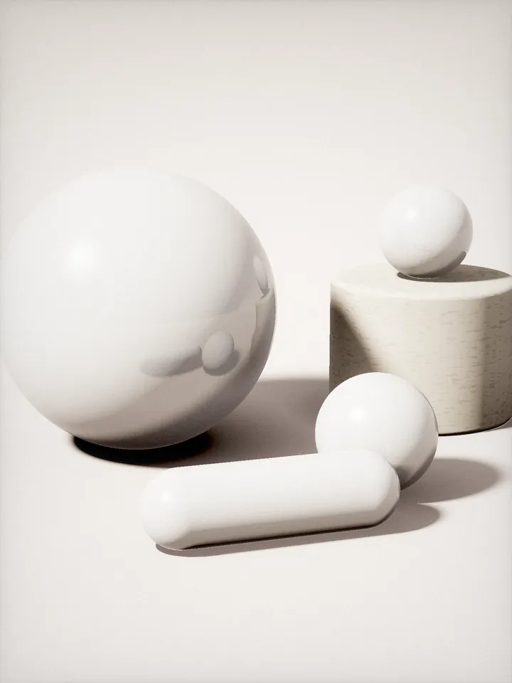
01 · Odontologia
Sorriso com saúde, proporção e longevidade.
Da prevenção às lentes de porcelana, cada tratamento parte de um planejamento digital do sorriso, pensado para o seu rosto e para durar.
Saiba maisOdontologia, estética facial e bem-estar reunidos em uma única clínica, com tempo para ouvir você.
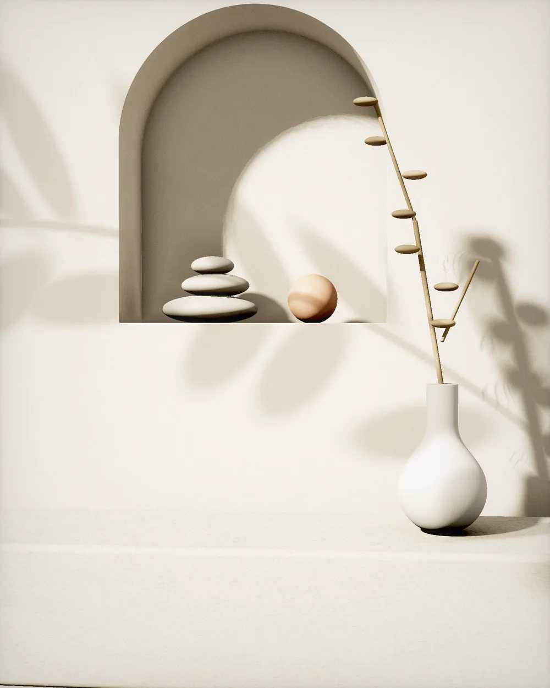
Um espaço dedicado a devolver o equilíbrio entre sorriso, pele e bem-estar, com planos que unem odontologia estética, harmonização facial e saúde integral para resultados naturais e duradouros.

Sorriso com saúde, proporção e longevidade.
Da prevenção às lentes de porcelana, cada tratamento parte de um planejamento digital do sorriso, pensado para o seu rosto e para durar.
Saiba mais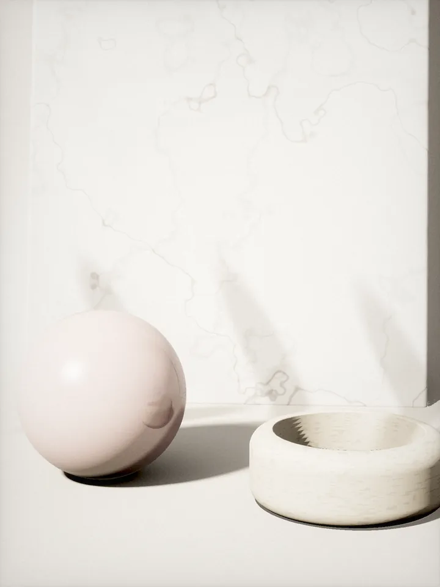
Refinamento, equilíbrio e a arte de parecer você.
Harmonização baseada em anatomia, com doses precisas e técnica delicada. O objetivo é realçar, nunca transformar quem você é.
Saiba mais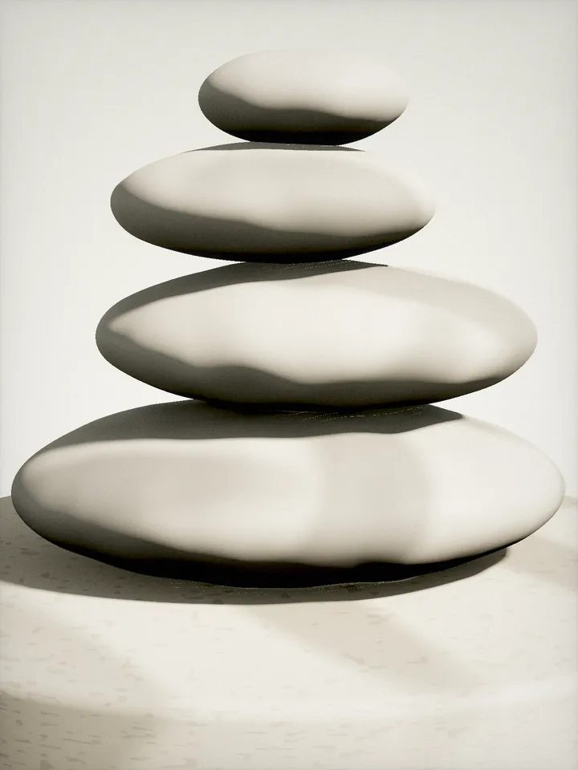
Olhar além do sorriso para entender o todo.
A saúde da boca conversa com o sono, a alimentação e a imunidade. Acompanhamos esses sinais com protocolos integrados e contínuos.
Saiba mais“Um cuidado tão bem pensado que parece ter sido sempre assim.”
Na Vitta, cada plano começa por uma avaliação completa e só termina quando você se reconhece no espelho, com mais saúde e naturalidade.
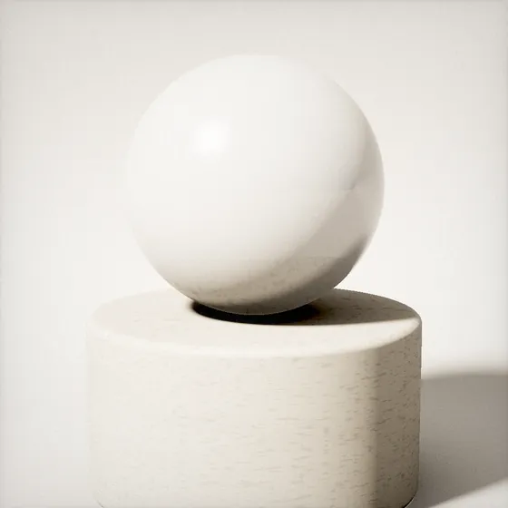
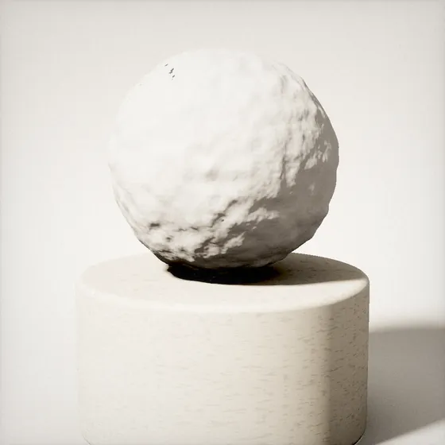
AntesDepoisLentes de porcelana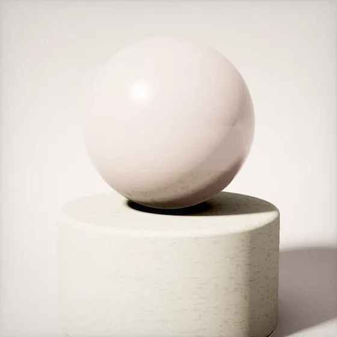
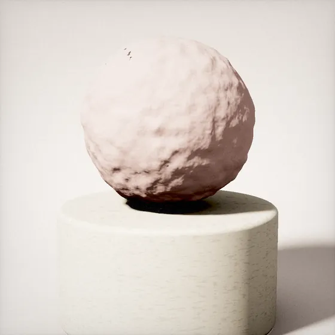
AntesDepoisHarmonização facial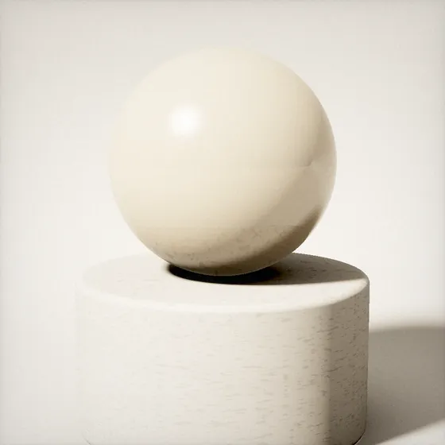
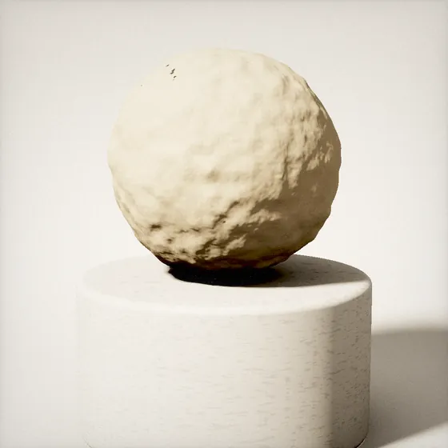
AntesDepoisClareamento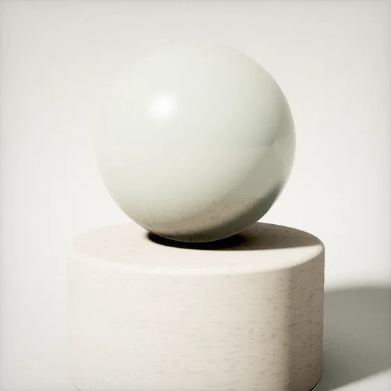
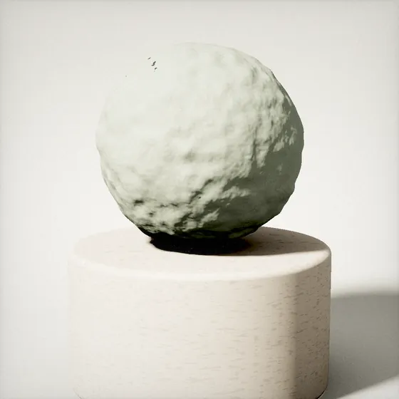
AntesDepoisSkincare clínico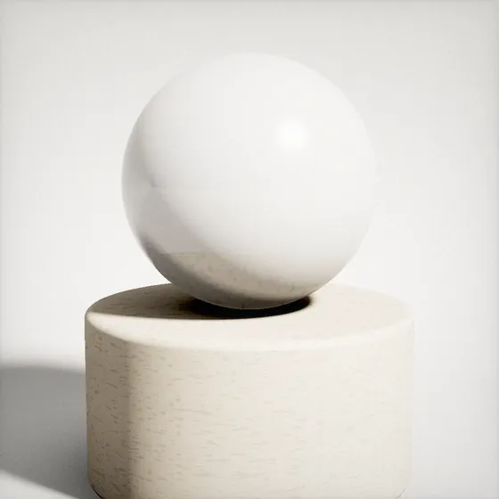
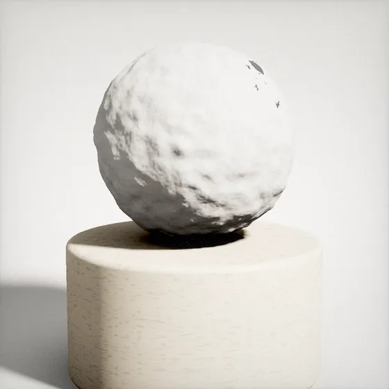
AntesDepoisAlinhadores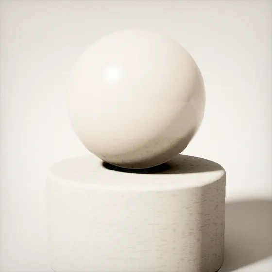
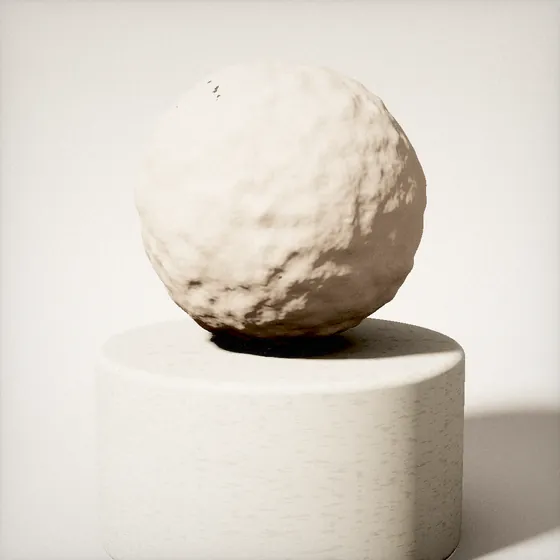
AntesDepoisBioestimuladores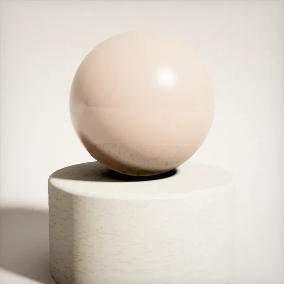
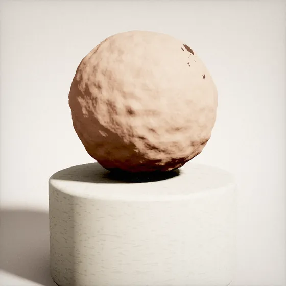
AntesDepoisReabilitação oral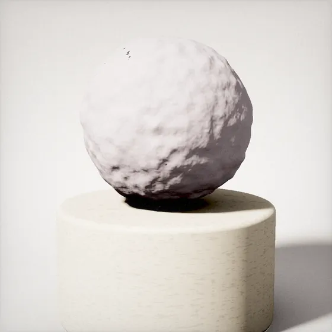
AntesDepoisRotina de peleImagens ilustrativas. Arraste para comparar. Resultados variam de pessoa para pessoa e dependem de avaliação profissional.
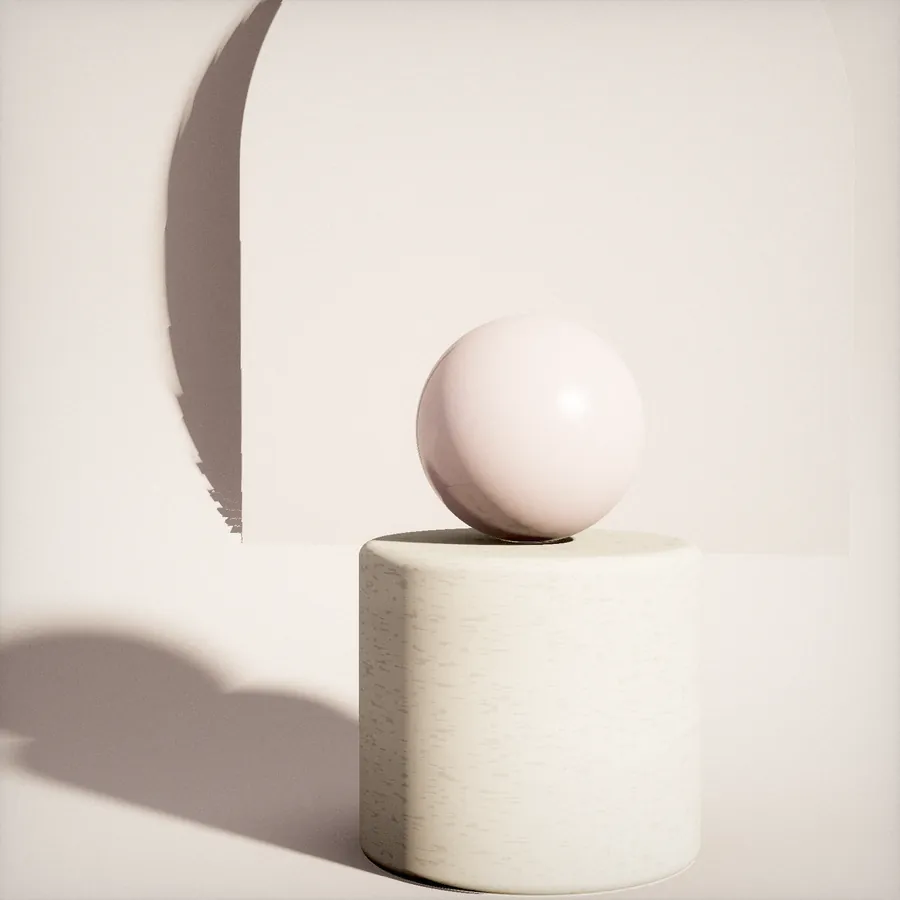
Um protocolo em etapas que observa o rosto como um todo: proporções, expressão e qualidade da pele. Nada é feito de uma vez. Cada sessão é ajustada para que o resultado apareça aos poucos, como um descanso que finalmente ficou visível.
Saiba maisMariana Lopeshá 2 semanas
★★★★★
Fiz as lentes com a equipe da Vitta e o resultado ficou exatamente como eu queria: natural. Ninguém percebe que é tratamento, só que eu estou sorrindo mais.
Rafael Mourahá 1 mês
★★★★★
Agendei pelo site em dois minutos e recebi a confirmação na hora. Atendimento pontual, explicações claras e nenhum procedimento empurrado.
Camila Reishá 1 mês
★★★★★
A harmonização foi feita em etapas, com muito cuidado. Meus amigos dizem que pareço descansada, que era exatamente o que eu buscava.
Luiza Andradehá 2 meses
★★★★★
Cheguei por causa do bruxismo e saí com um plano completo de sono e saúde bucal. A clínica é linda, silenciosa e muito acolhedora.
Paulo Henriquehá 3 meses
★★★★★
Profissionais atenciosos do começo ao fim. O lembrete automático antes da consulta ajudou muito na minha rotina corrida.
Júlia Camposhá 3 meses
★★★★★
Fiz clareamento e skincare. Tudo explicado com transparência, valores claros e um pós-atendimento que eu nunca tinha visto em outra clínica.
Consultas & tratamentos
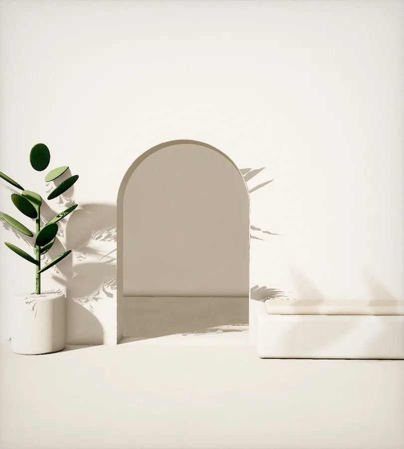
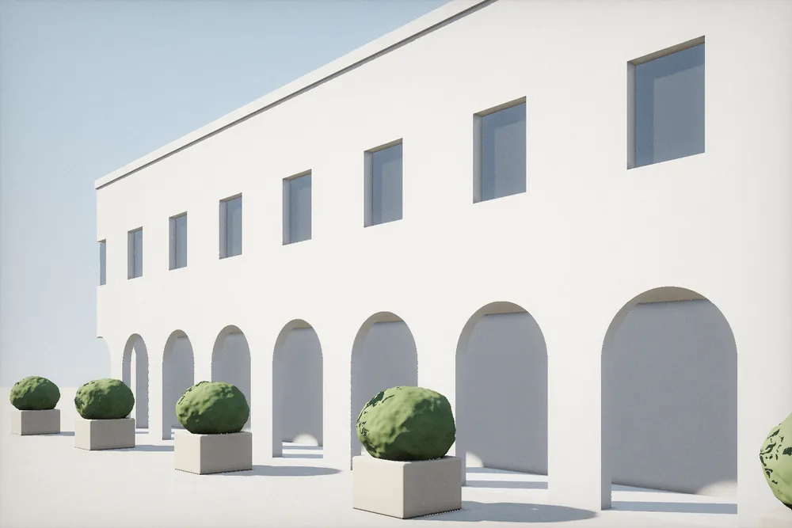
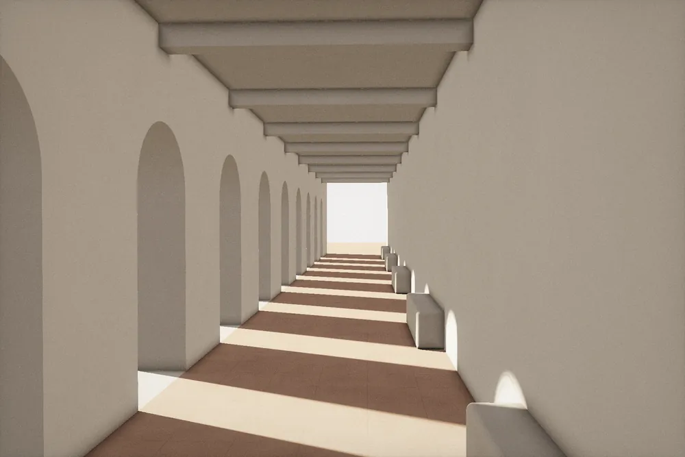